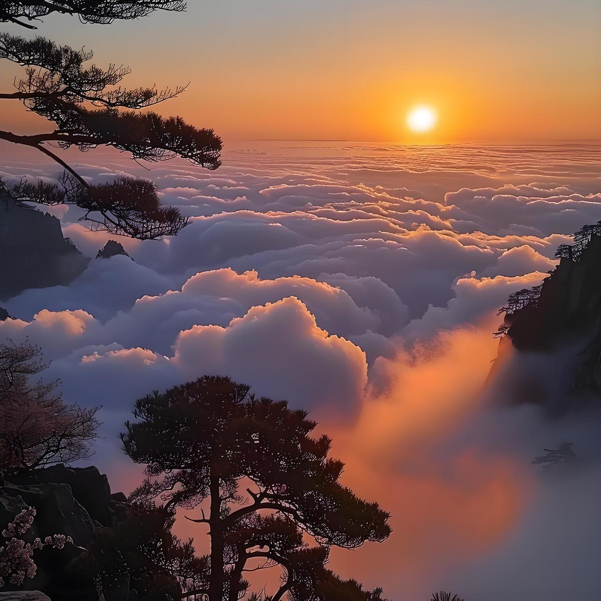
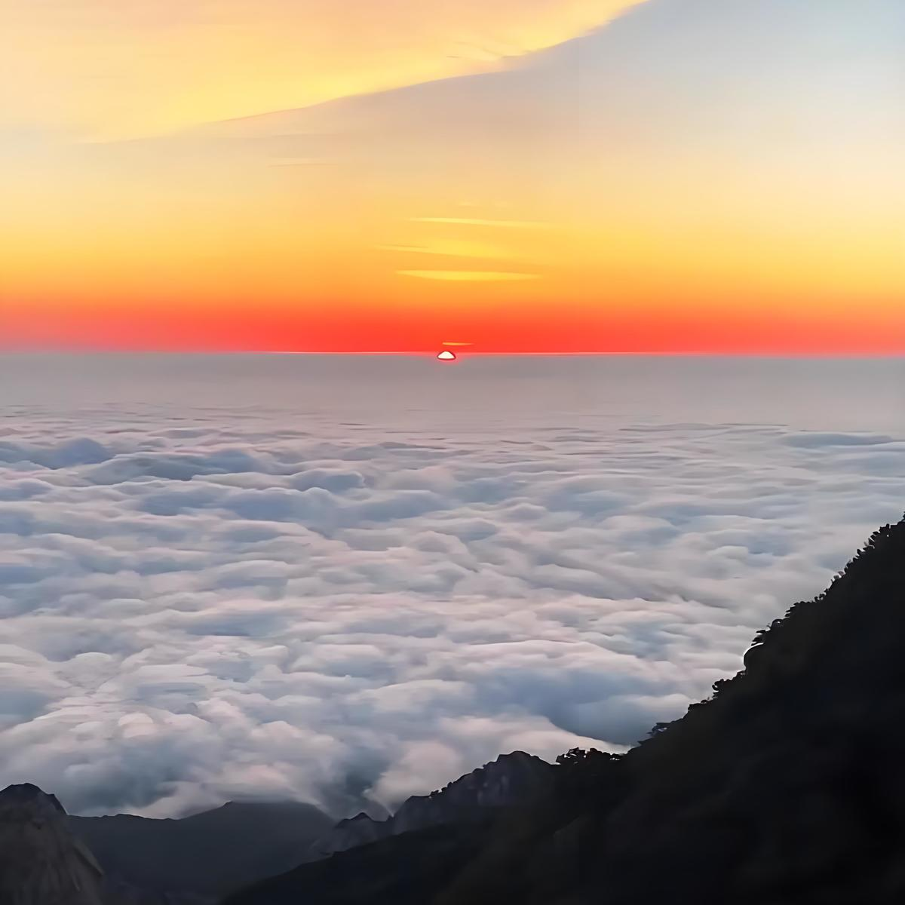

-
-
-

-

滚动页面，查看卡片滚动效果


泰山四大奇观泰山四大奇观是对山东省泰安市泰山景区内四种独特自然景观的统称，主要包含泰山日出、云海玉盘、晚霞夕照、黄河金带；另有一说以“泰山佛光”替代黄河金带，为世界文化与自然双遗产泰山的核心景观。
泰山日出发生于黎明时分岱顶，曙光渐变为金黄，红日喷薄而出；云海玉盘多见于夏秋雨后，云雾翻涌如海浪平铺；晚霞夕照于雨后天晴时呈现，金光穿云与层峦交辉；黄河金带为晴日黄昏远眺黄河的蜃景，形似金色飘带。泰山佛光为半晴半雾天气下衍射形成的彩色光环，多现于6-8月瞻鲁台至南天门区域。
奇观形成与地形、气候密切相关，最佳观赏期为秋季或雨后，岱顶及西北瞭望点为观测核心区域 。历代文人以诗文记载其景，自然奇观与人文积淀相融。
泰山日出是壮观而动人心弦的，是岱顶奇观之一，也是“天下第一山”——泰山的重要标志，随着旭日发出的第一缕曙光撕破黎明前的黑暗，从而使东方天幕由漆黑而逐渐转为鱼肚白、红色，直至耀眼的金黄，喷射出万道霞光，最后，一轮火球跃出水面，腾空而起，整个过程像一个技艺高超的魔术师，在瞬息间变幻出千万种多姿多彩的画面，令人叹为观止。岱顶观日历来为游人所向往，也使许多文人墨客为之高歌。
当雨过天晴，天高气爽，夕阳西下的时候，若漫步泰山极顶，仰望西天：朵朵残云如峰似峦，一道道金光穿云破雾，直泻人间。在夕阳的映照下，云峰之上均镶嵌着一层金灿灿的亮边，闪烁着奇珍异宝般的光辉。“谁持彩笔染长空，几处深黄几处红。”“清泉泻万仞，落日御千峰。”
泰山佛光是岱顶奇观之一。每当云雾弥漫的清晨或傍晚，游人站在较高的山头上顺光而视，就可能看到缥缈的雾幕上，呈现出一个内蓝外红的彩色光环，将整个人影或头影映在里面，恰似佛像头上方五彩斑斓的光环，故得名“佛光”或“宝光”。泰山佛光是一种光的衍射现象，它的出现是有条件的。据记载，泰山佛光大多出现在6-8月中半晴半雾的天气，而且是太阳斜照之时。
云海玉盘是岱顶的又一奇观。夏天，雨后初晴，大量水蒸气蒸发上升，加之夏季从海上吹来的暖温空气被高压气流控制在海拔1500米左右的高度时，如果无风，在岱顶就会看见白云平铺万里，犹如一个巨大的玉盘悬浮在天地之间。远处的群山全被云雾吞没，只有几座山头露出云端；近处游人踏云驾雾，仿佛来到了天外。微风吹来，云海浮波，诸峰时隐时现，像不可捉摸的仙岛，风大了，玉盘便化为巨龙，上下飞腾，倒海翻江。
黄河金带——新霁无尘、夕阳西下时，举目远眺，在泰山的西北边，层层峰峦的尽头，还可看到黄河似一条金色的飘带闪闪发光；或是河水反射到天空、造成蜃景，均叫“黄河金带”。它波光粼粼，银光闪烁，黄白相间，如同金银铺就，从西南至东北，一直伸向天地交界处。清代诗人袁枚在《登泰山诗》中对黄河金带描写生动而传神：“一条黄水似衣带，穿破世间通银河”。晚霞夕照与黄河金带的神奇景色，与季节和气候有着很大的关系。为了能使登泰山者充分领略和享受这一奇观美景，就必须选择恰当的旅游时机。应该说秋季最好，因为这时风和日丽，天高云淡；其次是大雨之后，残云萦绕，天晴气朗，尘埃绝少，山清水秀。你尽可放目四野，饱览“江山如此多娇”的秀容美貌。